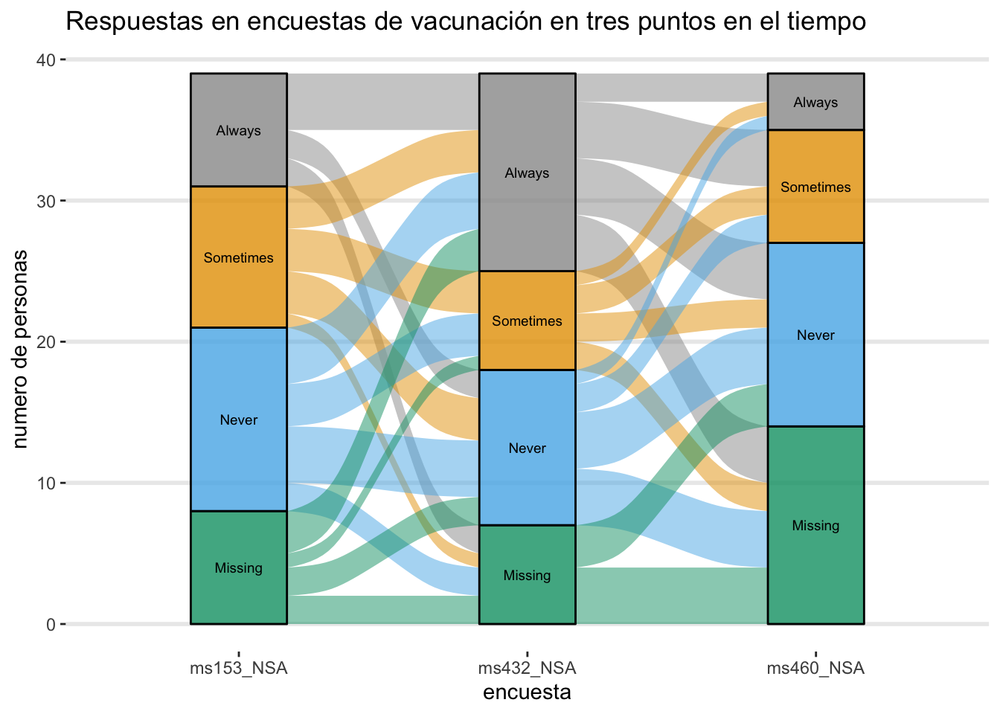
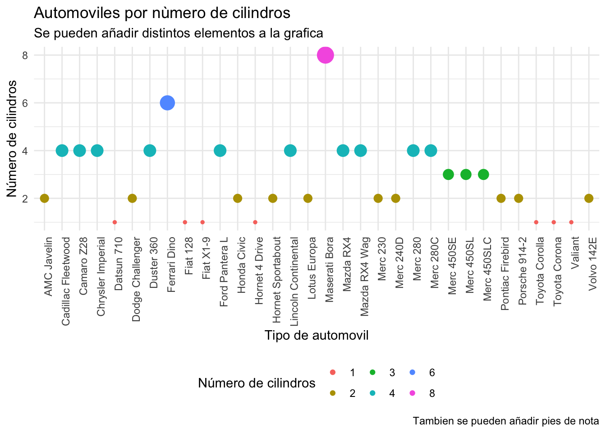
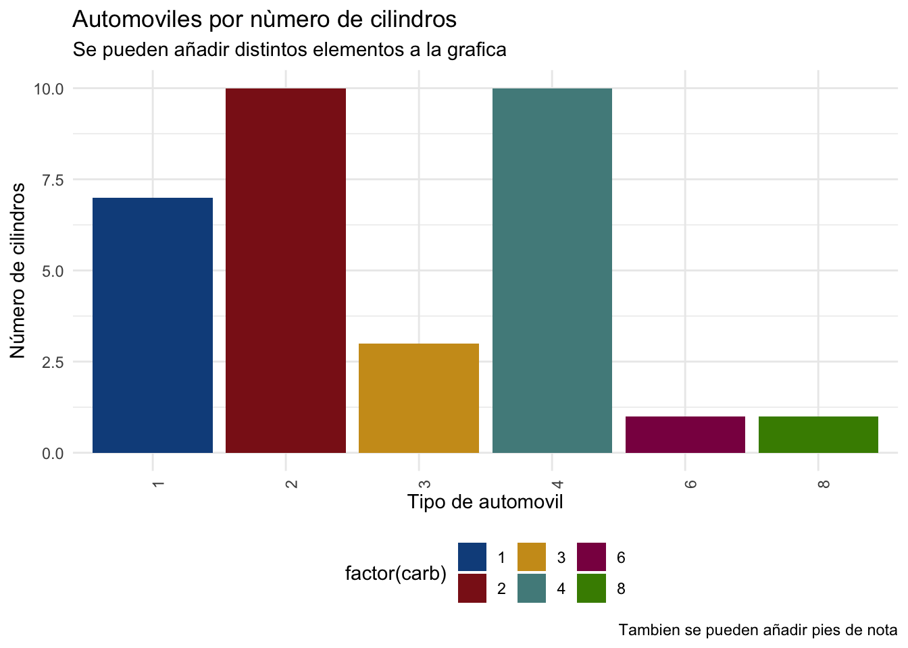
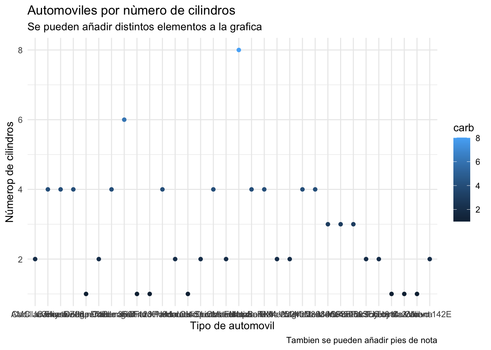

Chapter 6 Visualización de datos
6.1 Motivación
R tiene un framework para crear gráficas que (creo yo) es de los más versátiles para cosas estáticas. Este framework es llamado ggplot. Además de ese framework cuenta con otros como lattice o base, pero en general están en desuso.
library(alluvial)
library(ggalluvial)## Loading required package: ggplot2library(magrittr)
data(vaccinations)
cbPalette <- c("#999999", "#E69F00", "#56B4E9", "#009E73", "#F0E442",
"#0072B2", "#D55E00", "#CC79A7")
levels(vaccinations$response) <- rev(levels(vaccinations$response))
vaccinations %>% ggplot(
aes(x = survey,
fill = response,
stratum = response,
alluvium = subject,
weight = freq)) +
geom_flow() +
geom_stratum(alpha = .8) +
geom_text(stat = "stratum", infer.label = TRUE, size = 2.5) +
theme_bw() + theme(legend.position = "none",
panel.background = element_rect(fill = NA),
panel.grid.major.y = element_line(size = 1),
panel.grid.major.x = element_line(size = 0),
panel.grid.minor = element_line(size = 0),
axis.line = element_line(size = 0),
panel.border = element_rect(size = 0)) +
scale_fill_manual( values = c(cbPalette, "#999999", "#999999")) +
theme(legend.position = "none") +
labs(title = "Respuestas en encuestas de vacunación en tres puntos en el tiempo",
x = "encuesta", y = "numero de personas")## Warning: The parameter `infer.label` is deprecated.
## Use `aes(label = after_stat(stratum))`.
Si notan, el texto para crear la grafíca es largo y parece dificil, pero con practica todos estos comandos se vuelven intuitivos. Para esta intro a visualización de datos, solamente veremos diferentes tipos de gráficas y en capitulos siguientes profundizaremos en creación de gráficas. Además veremos conceptos básicos de bases de datos.
6.2 Formato largo y ancho de bases
En procesamiento de bases comunmente se utilizan dos tipos de layout (largo/long, ancho/wide). En el formato wide, se tiene un renglon por cada data point y multiples columnas que contienen los atributos. En el formato long, cada punto se repite n veces de acuerdo al nùmero de atributos. R viene con algunos databases integrados, mtcars es uno de ellos.
- tidyr::gather() pasa de formato ancho a largo
- tidyr::spread() pasa de formato largo a ancho
Ejemplo de formato ancho:
library(tidyr)##
## Attaching package: 'tidyr'## The following object is masked from 'package:magrittr':
##
## extractwide_db <-
mtcars %>%
dplyr::mutate(car_type = row.names(.)) %>%
dplyr::filter(car_type == "Camaro Z28")
wide_db## mpg cyl disp hp drat wt qsec vs am gear carb car_type
## 1 13.3 8 350 245 3.73 3.84 15.41 0 0 3 4 Camaro Z28Ejemplo de formato largo:
long_db <-
wide_db %>%
tidyr::gather(attribute, value, mpg:carb)
long_db## car_type attribute value
## 1 Camaro Z28 mpg 13.30
## 2 Camaro Z28 cyl 8.00
## 3 Camaro Z28 disp 350.00
## 4 Camaro Z28 hp 245.00
## 5 Camaro Z28 drat 3.73
## 6 Camaro Z28 wt 3.84
## 7 Camaro Z28 qsec 15.41
## 8 Camaro Z28 vs 0.00
## 9 Camaro Z28 am 0.00
## 10 Camaro Z28 gear 3.00
## 11 Camaro Z28 carb 4.00El formato que comunmente estamos acostumbrados es el ancho, pero para R y procesamiento de datos es más común y mejor práctica trabajar sobre formatos largos.
6.3 tidyverse
Tidyverse es una colección de paquetes/librerias que sirven para el análisis de datos, este consiste en un grupo de paquetes para facilitar el trabajo con datos.
6.4 ggplot
ggplot es el paquete de visualización de datos que consiste en distintos elementos. Hay que diferenciar entre los distintos conceptos:
- ggplot2 es una libreria que trabaja por ‘capas’ y trabaja sobre formatos largos de base de datos
- ggplot(): es la base de la gráfica. Inicializa una grafica vacia.
- aes(): se les llama los aesthetics. Es lo que define en que valor de x, y, color, relleno, tamaño tendrá la gráfica
Todas las funciones de ggplot que inician con geom_ definen distintos tipos de gráficas.
- geom_point(): Te define una grafica de puntos (o scatterplot).
- geom_bar(): Te define una grafica de barras (o barplot)
- geom_histogram(): Te define un histograma
- geom_line(): Te define una gráfica de linea
- geom_boxplot(): Te define gráfica de boxplot
Asi como muchos otros tipos de gráfica. A cada gráfica le podemos añadir o modificar cuestiones del formato.
- theme(): dentro de esta funcion podemos agregar o modificar particularidades de la grafica
Además, se le puede modificar el texto de la gráfica
- labs(): te permite modificar el texto del eje x, eje y, titulo, subtitulo, caption, etc
6.4.1 Scatterplot
Sin formato
library(ggplot2)
mtcars %>%
dplyr::mutate(car_type = row.names(.)) %>%
ggplot() + # crea un empty plot
geom_point(aes(x = car_type, y = carb, color = carb)) + # vamos agregando capas
theme(axis.text.x = element_text(angle = 90, hjust = 1)) + # agregamos formato
labs(title = "Automoviles por nùmero de cilindros",
subtitle = "Se pueden añadir distintos elementos a la grafica",
caption = "Tambien se pueden añadir pies de nota",
x = "Tipo de automovil",
y = "Númerop de cilindros") + # tambièn se pueden agregar elementos extra
theme_minimal() # incluso se puede sobreescribir los elementos definidos previamente
Con formato
mtcars %>%
dplyr::mutate(car_type = row.names(.)) %>%
ggplot() +
geom_point(aes(x = car_type, y = carb, color = factor(carb), size = carb)) +
theme_minimal()+
theme(axis.text.x = element_text(angle = 90, hjust = 1),
legend.position = "bottom") +
labs(title = "Automoviles por nùmero de cilindros",
subtitle = "Se pueden añadir distintos elementos a la grafica",
caption = "Tambien se pueden añadir pies de nota",
x = "Tipo de automovil",
y = "Número de cilindros",
color = "Número de cilindros") +
guides(size = FALSE)
6.4.2 Barplot
mtcars %>%
dplyr::mutate(car_type = row.names(.)) %>%
ggplot() +
geom_bar(aes(x = factor(carb), fill = factor(carb)),
stat = "count") +
theme_minimal() +
scale_fill_manual(values = c("dodgerblue4", "firebrick4", "goldenrod3", "darkslategray4", "deeppink4", "chartreuse4"))+
theme(axis.text.x = element_text(angle = 90, hjust = 1),
legend.position = "bottom") +
labs(title = "Automoviles por nùmero de cilindros",
subtitle = "Se pueden añadir distintos elementos a la grafica",
caption = "Tambien se pueden añadir pies de nota",
x = "Tipo de automovil",
y = "Número de cilindros",
color = "Número de cilindros") +
guides(size = FALSE)+
theme()
6.5 Ejercicios de práctica
6.5.1 Ejercicio 7
- tidyr::gather() pasa de formato ancho a largo
- tidyr::spread() pasa de formato largo a ancho
library(dplyr)##
## Attaching package: 'dplyr'## The following objects are masked from 'package:stats':
##
## filter, lag## The following objects are masked from 'package:base':
##
## intersect, setdiff, setequal, unionlibrary(tidyr)
wide_db <-
mtcars %>%
dplyr::mutate(car_type = row.names(.)) %>%
dplyr::filter(car_type == "Camaro Z28")
wide_db %>% head## mpg cyl disp hp drat wt qsec vs am gear carb car_type
## 1 13.3 8 350 245 3.73 3.84 15.41 0 0 3 4 Camaro Z28long_db <-
wide_db %>%
tidyr::gather(attribute, value, mpg:carb)
long_db %>% head## car_type attribute value
## 1 Camaro Z28 mpg 13.30
## 2 Camaro Z28 cyl 8.00
## 3 Camaro Z28 disp 350.00
## 4 Camaro Z28 hp 245.00
## 5 Camaro Z28 drat 3.73
## 6 Camaro Z28 wt 3.84wide_db <-
long_db %>%
tidyr::spread(attribute, value)6.5.2 Ejercicio 8
Analiza como se transiciona del siguiente chunk de código:
library(ggplot2)
mtcars %>%
dplyr::mutate(car_type = row.names(.)) %>%
ggplot() + # crea un empty plot
geom_point(aes(x = car_type, y = carb, color = carb)) + # vamos agregando capas
theme(axis.text.x = element_text(angle = 90, hjust = 1)) + # agregamos formato
labs(title = "Automoviles por nùmero de cilindros",
subtitle = "Se pueden añadir distintos elementos a la grafica",
caption = "Tambien se pueden añadir pies de nota",
x = "Tipo de automovil",
y = "Númerop de cilindros") + # tambièn se pueden agregar elementos extra
theme_minimal() # incluso se puede sobreescribir los elementos definidos previamente
6.5.3 Ejercicio 9
mtcars %>%
dplyr::mutate(car_type = row.names(.)) %>%
ggplot() +
geom_point(aes(x = car_type, y = carb, color = factor(carb), size = carb)) +
theme_minimal()+
theme(axis.text.x = element_text(angle = 90, hjust = 1),
legend.position = "bottom") +
labs(title = "Automoviles por nùmero de cilindros",
subtitle = "Se pueden añadir distintos elementos a la grafica",
caption = "Tambien se pueden añadir pies de nota",
x = "Tipo de automovil",
y = "Número de cilindros",
color = "Número de cilindros") +
guides(size = FALSE)